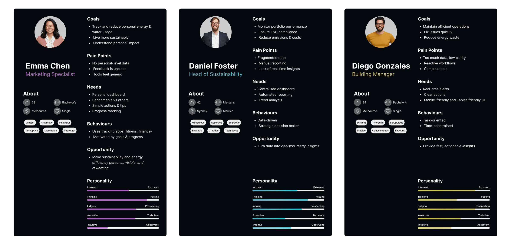
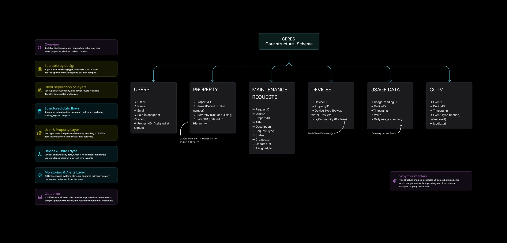

Ceres
Overview
Ceres is a property sustainability SaaS platform, a single product serving three fundamentally different users: tenants tracking personal energy and consumption, organisations monitoring portfolio-wide ESG performance, and building managers responding to real-time operational issues.
The core promise is deceptively simple: help people move from data → insight → action more efficiently. The challenge is that each user type needs a different version of that journey, at different scales, with different urgency, and with radically different levels of data literacy.
Most platforms of this kind are designed by engineers, for engineers. The information is all there, but the cognitive work of navigating it, understanding it, and acting on it is left entirely to the user. Ceres exists to fix that.
As sole designer and product founder, I've owned the entire experience: from defining the problem space and mapping user needs, through to the data architecture, information design, interaction patterns, component system, and high-fidelity UI. First end-to-end solo founding project.
The Problem
Complex data tools typically share the same set of sins:
- Everything is visible at once. Dense tables, endless filters, nested menus, the interface presents maximum information rather than the right information.
- Context collapses under scale. When datasets grow, the UI doesn't adapt. Users lose their place, lose their thread, and lose confidence in what they're looking at.
- The gap between data and decision is invisible. Raw data doesn't tell you what to do. Most platforms stop at showing you the numbers. Ceres needed to go further.
The result of these patterns, which I validated through early-stage user conversations, was predictable:
- High cognitive load: Users reported needing significant mental effort just to orient themselves within the platform, before they could begin any actual analysis
- Slower task completion: Navigating between data views to piece together a complete picture required too many steps and too much context-switching
- Disengagement from key features: Several high-value features were going unused, not because users didn't need them, but because they were too hard to find and too hard to understand in context
This wasn't a data problem. It was a design problem.
My Role
As both founder and lead designer, I had no design brief handed to me, I wrote it. That meant:
- Defining the product vision and translating it into a UX strategy
- Conducting early user conversations to pressure-test assumptions
- Mapping the full information architecture before touching a single screen
- Designing every flow: discovery, navigation, filtering, data drill-down, and insight surfacing
- Building a Figma component library from scratch to support fast iteration
- Running internal usability sessions and iterating based on findings
The absence of a team was both a constraint and a forcing function. Every decision had to be defensible on its own merits, there was no design review to catch weak thinking.
- Role
- Lead Product Designer
- Timeline
- 2026 - In Progress
- Platforms
- iOS, MacOS, Web
- Company
- Jorge Martin
Discovery
User research & personas
Before any design work began, I mapped the three distinct users Ceres needed to serve, and the research made clear that they weren't just different roles; they were fundamentally different relationships with data.
Emma Chen. Tenant (Marketing Specialist, 29, Melbourne) Emma wants to track and reduce her personal energy and water usage, live more sustainably, and understand her own environmental impact. Her pain: no personal-level feedback, unclear data, tools that feel generic. What she needs is a personal dashboard, benchmarks against similar households, simple action tips, and visible progress. She's motivated by goals: she already tracks fitness and finance. Where solar makes this richer: if her building has rooftop solar, her dashboard can show generation vs. consumption: "you produced 14 kWh today, used 9 kWh"; shifting the experience from guilt-driven reduction to net-positive achievement. That framing is significantly more rewarding, and feeds directly into gamification and benchmarks. The design opportunity: make sustainability personal, visible, and rewarding.
Daniel Foster. Head of Sustainability (42, Sydney) Daniel is managing ESG compliance across a property portfolio. He needs to monitor performance at scale, produce automated reports, and reduce emissions and costs. His pain: fragmented data across systems, manual reporting, and a lack of real-time insight. He's data-driven and strategic. Solar and battery data is central to his use case: portfolio-level generation figures, renewable energy percentages, carbon offset calculations, and battery arbitrage performance are exactly the metrics that go into NABERS ratings and sustainability disclosures. Automated ESG reporting without generation data is incomplete for any building with solar, Ceres closes that gap. The design opportunity: turn raw building data into decision-ready insights.
Diego Gonzales. Building Manager (38, Melbourne) Diego's job is operational, maintain efficient building systems, fix issues fast, reduce energy waste. His pain: too many data points with too little clarity, reactive workflows, and complex tools that slow him down. He's time-constrained and task-oriented. He needs real-time alerts, clear action recommendations, and a UI that works on mobile and tablet. Solar and batteries add a direct layer to his alert surface: inverter faults, battery degradation, and panels generating significantly below expected output are all maintenance triggers, the same operational urgency as a water leak or power fault. The design opportunity: fast, actionable intelligence, not more dashboards.

Three questions anchored every user conversation:
- What does your current process look like when you're trying to make a decision from data?
- Where do you typically get stuck or frustrated?
- What does "understanding the data" feel like when it's working well?
The answers were consistent across all three user types: people didn't struggle to access data. They struggled to trust it, navigate it, and act on it, in that order. But the specific failure points were different for each persona, which shaped every design decision that followed.
Mapping the problem space
From that research, I mapped the user journey not as a series of screens, but as a series of cognitive states:
Orientation → Exploration → Comprehension → Validation → ActionEach state had distinct needs. Orientation required landmarks and hierarchy. Exploration required flexible but guided navigation. Comprehension required progressive disclosure. Validation required confidence signals. Action required clear, low-friction next steps.
This framework became the design compass for every decision that followed.
Key Insights
Insight 1: Users don't need more data , they need better framing. The existing mental model for data platforms is: show everything, let the user filter. Ceres needed to invert this: start with a clear frame, reveal depth on demand. Less isn't less; it's faster.
Insight 2: Cognitive load is not just a UX problem, it's a product retention problem. If users feel overwhelmed every time they open the platform, they'll stop opening it. The design had to make complexity feel manageable from the very first view, not after onboarding, not after experience. Immediately.
Insight 3: The interface should have a point of view. Generic data platforms are neutral by design. Ceres needed to make opinionated choices: what to surface first, what to emphasise, what to de-emphasise. That editorial layer, done well, is what turns a data tool into a decision tool.
Design Approach
Platform architecture
Before designing a single screen, I mapped the core data schema: the structural foundation that every UI decision would eventually rest on. Ceres is built around six interconnected entities:
- Users: with roles (Manager or Resident) assigned at signup, tying permissions directly to the property hierarchy
- Property: a hierarchical model that scales from a single unit all the way to a multi-building complex, with parent-child relationships enabling portfolio views
- Maintenance Requests: the operational layer linking users, properties, and assigned responders with full status tracking
- Devices: utility meters (power, water, gas), rooftop solar, and battery systems attached to properties, with a boolean flag distinguishing individual vs. community-level readings. The inclusion of solar and batteries makes Usage Data bidirectional: the platform tracks not just what properties consume, but what they generate, store, and export.
- Usage Data: normalised into a single table structure to enable consistent real-time monitoring and aggregated insights across any property level
- CCTV: event-based monitoring (motion, alerts, online status) with media references, forming the safety and awareness layer
The schema was designed with three principles: clear separation of layers (user, property, device), structured data flows that support both real-time alerts and aggregated reporting, and scalability from a single unit to an enterprise portfolio without architectural changes.
This structure mattered for the design directly. The hierarchical property model meant navigation had to support context-switching between scales: a tenant seeing their unit, a building manager seeing their building, an organisation's sustainability department seeing their entire portfolio, without fragmenting into separate products. One schema, three user experiences.

Information Architecture
The foundational decision was to design the navigation around user intent, not data structure. Most platforms organise themselves around their data model (tables, categories, hierarchies). Ceres organises around what users are trying to do.
Ceres serves three distinct user types, each with a fundamentally different relationship to the data:
- Tenants: motivated by personal behaviour, footprint feedback, and consumption insights
- Organisations: focused on portfolio-level strategy and ESG compliance
- Building managers: oriented toward operational action and issue resolution
A single platform serving three distinct user needs: motivation, strategy, and action. Aligning features to these layers drives both user value and business impact.
This three-layer model shaped the entire information architecture. Rather than building one generic data experience, each user type has a distinct primary mode, and features are designed to serve the right audience at the right moment.
| Feature | Tenants | Organisations | Building managers | Business impact |
|---|---|---|---|---|
| Personalised dashboard | Tracks usage | — | — | Increased engagement |
| Benchmarks | Motivates behaviour | Compare buildings | — | Behaviour change → lower consumption |
| Real-time alerts | Submit a non-urgent ticket | — | Detect issues fast | Reduced operational costs |
| Centralised analytics | Behaviour tracking | Portfolio tracking | Building tracking | Better decision making |
| Automated reporting | Behaviour tracking | ESG compliance | Strategic planning | Time savings + compliance |
| Action recommendations | Guides behaviour | Strategic planning | Immediate fixes | Efficiency optimisation |
| Gamification | User Retention | Loyalty and expand | Usability | Higher user retention |
| Responsive design | Easy tracking | Remote friendly | On-the-go fixes | Faster response times |
| Accessibility compliance | Readability | WCAG compliance | — | Universal accessibility |
I mapped the three primary intent modes that cut across all user types:
- Overview: understand the current state at a glance
- Investigate: drill into a specific area or trend
- Act: take the next step based on what you've found
Each mode received a distinct visual treatment and navigation pattern, so users always knew which mode they were in; and how to move between them without losing context.
Progressive disclosure
The core interaction pattern throughout Ceres is progressive disclosure: start with a summary, expand into detail. This appears at every level of the product:
- Dashboard level: Key signals surface first; granular data is one interaction away
- Data view level: High-level trends visible immediately; drill-down reveals supporting data
- Action level: Recommended next steps presented clearly; full configuration available for advanced users
The principle: never show more than the user needs at this moment. Earn the right to show complexity by first demonstrating clarity.
Contextual guidance
One of the most consistent pain points from user research was the absence of context, users knew what they were looking at, but not what it meant. I designed a lightweight contextual guidance layer: inline annotations, threshold indicators, and comparison anchors that help users interpret data without requiring them to hold context in their heads.
The goal was to make the interface feel like it's on the user's side, actively helping them understand, rather than passively presenting information.
Confidence signals
Before a user can act, they need to trust. I designed explicit confidence signals into the UI: data freshness indicators, source transparency, and completeness cues that tell users not just what the data says, but how much weight to give it. Small decisions, significant impact on user behaviour.
Design System
Building Ceres solo meant the design system wasn't optional, it was survival. Without a consistent component library, iteration would have been impossibly slow and the product would have fragmented visually as it grew.
I built the system in Figma using atomic design principles:
Foundations
- Colour tokens defined for semantic use (status, emphasis, neutral, interactive), not just aesthetic
- Typography scale built for data density: readable at small sizes, clear at a glance
- Spacing system based on an 8pt grid, applied consistently across all components
Components
- Data display components (tables, cards, charts, summary tiles) designed as a family, consistent visual logic across all data types
- Filter and navigation components designed for flexibility: the same component handles simple and complex filtering without visual complexity
- State design built in from the start: every component documented for empty, loading, error, and populated states
Design principles baked in Each component was designed to carry the product's principles: progressive disclosure, clarity over density, confidence through consistency. The system isn't just a pattern library, it's the product's design logic made tangible.
Key Decisions & Rationale
Choosing progressive disclosure over filtering The instinct for data tools is to give users powerful filters. I deliberately constrained the early filtering experience, not because filtering isn't useful, but because a user who hasn't yet oriented themselves will apply filters without understanding the context they're filtering within. Progressive disclosure first; filtering as a tool once orientation is established.
Designing for the confused user, not the expert It was tempting to optimise for the power user, someone who knew the data domain deeply and just wanted raw access. But the research made clear that even expert users struggled with orientation in complex datasets. I designed for the moment of confusion first, knowing that experts would find power-user features; but confused users would churn.
Investing in micro-copy The words in the interface are as important as the components. I spent significant time on labels, tooltips, empty state messages, and confirmation copy. In a data platform, language that's technically accurate but contextually unclear adds cognitive load. Every word was chosen to reduce that load.
- Categories
- SaaS | Data Visualisation | End-to-end Product design
- Users
- Currently on Internal test
- Design key outcome
- Transform a data-heavy energy management platform from overwhelming to intuitive, without sacrificing depth
- Engineering outcome
- Built end-to-end as sole designer and founder
Status & Next Steps
Ceres is currently in internal testing. The core flows, overview, investigation, and action, are built and functioning. The design system is stable and being used as the foundation for all new feature work.
Internal testing is focused on:
- Validating the progressive disclosure model against real usage patterns
- Identifying points where the confidence signal layer is insufficient
- Testing the navigation model with users across different levels of data literacy
Quantitative outcome data will follow from this testing phase. What I can say from qualitative feedback so far: the consistent response to the first session is that the product "feels lighter" than comparable tools, which was exactly the design intention.
What This Project Taught Me
Product thinking is design thinking. Building Ceres without a product manager meant I had to internalise both roles. Every design decision was also a product decision: what to build, in what order, for whom, and why. That dual responsibility made me a better designer, because I couldn't defer the hard strategic questions to someone else.
Constraints surface good design. Working solo, with a limited timeline and no external design review, forced prioritisation. The design system wasn't built out of preference, it was built out of necessity. And the discipline that necessity imposed produced a better, more coherent product than unconstrained exploration would have.
The best UX is invisible. The measure of success for Ceres isn't whether users notice the design. It's whether they forget it's there — because the interface is so clearly oriented around their intent that they stop thinking about the tool and start thinking about the decision. That's the goal. We're not there yet. But every design decision is pointed in that direction.
Ceres iOS is currently in internal testing, and MacOS app is under development.
see also
Design systemsAFL Fantasy Gamification
FIFA Play Zone
Let’s Create Together
Reach out anytime